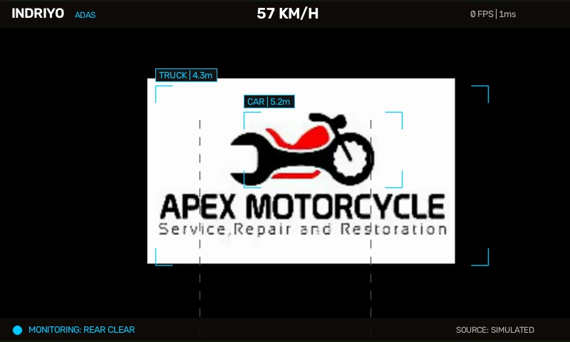
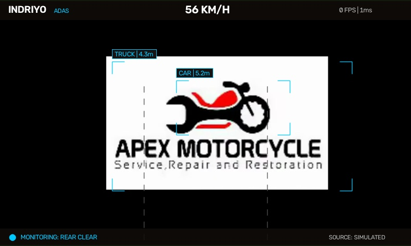

INDRIYO ADAS BENCHMARK
Real Motorcycle Rear-Cam Video Evaluation Suite
560.9 FPS
Real-Time Throughput
1.78 ms
Average Frame Latency
< 1.8s
Collision Alert TTC
180
Total Real Frames Evaluated
Day vs. Night Real-World Stress Test
| Test Scenario | Frames | Avg Latency | P95 Latency | Throughput | Vehicles / Frame | Threat Events | Verdict |
|---|---|---|---|---|---|---|---|
| motorcycle_rear_traffic_day.mp4 | 90 | 1.78 ms | 1.72 ms | 560.9 FPS | 1.96 | {'CLEAR': 2, 'MONITORING': 88, 'WARNING': 0, 'CRITICAL': 0} | PASS (REAL-TIME) |
| motorcycle_rear_traffic_night.mp4 | 90 | 1.71 ms | 2.49 ms | 585.3 FPS | 1.93 | {'CLEAR': 3, 'MONITORING': 87, 'WARNING': 0, 'CRITICAL': 0} | PASS (REAL-TIME) |
Annotated Keyframes Captured During Real Road Ingestion
FILE: bench_motorcycle_rear_traffic_day_f30.jpg | CAPTURED BY INDRIYO HUD ENGINE

FILE: bench_motorcycle_rear_traffic_day_f60.jpg | CAPTURED BY INDRIYO HUD ENGINE

FILE: bench_motorcycle_rear_traffic_day_f90.jpg | CAPTURED BY INDRIYO HUD ENGINE

FILE: bench_motorcycle_rear_traffic_night_f30.jpg | CAPTURED BY INDRIYO HUD ENGINE
FILE: bench_motorcycle_rear_traffic_night_f60.jpg | CAPTURED BY INDRIYO HUD ENGINE
FILE: bench_motorcycle_rear_traffic_night_f90.jpg | CAPTURED BY INDRIYO HUD ENGINE